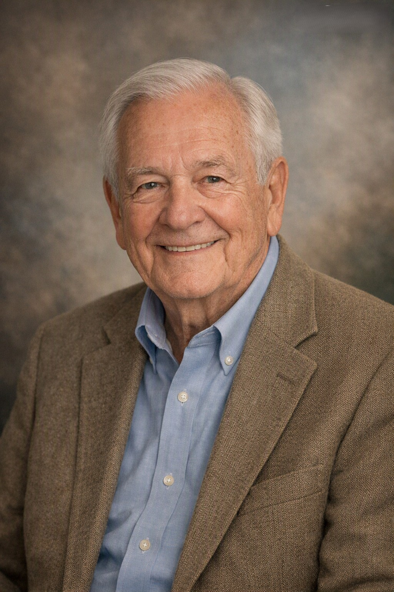

John Smith was a beloved father, grandfather, and friend to many. Known for his gentle spirit, warm smile, and dedication to his family, John lived a life full of kindness and quiet strength. He enjoyed woodworking, fishing on early summer mornings, and spending time with his grandchildren. His legacy of love continues through all who knew him.
I’ll never forget the sound of Grandpa’s voice filling the church on Sunday mornings. He didn’t just sing — he meant every word. Whether it was “Amazing Grace” or “How Great Thou Art,” his voice carried warmth and conviction that made everyone stop and listen. Music was his way of sharing joy, and he found it everywhere — in the hum of his old guitar, the rhythm of rain on the porch roof, or the laughter of family gathered around him.
Grandpa taught me that a song could heal, comfort, and bring people together. He played at family reunions, community gatherings, and sometimes just for us kids sitting cross‑legged on the living room floor. Even as his hands grew older, he never stopped strumming. He said music kept his heart young.
Beyond his love of music, Grandpa lived with quiet faith and endless kindness. He believed in hard work, helping neighbors, and finding beauty in simple things — a freshly mowed yard, a well‑kept headstone, a hymn sung from memory. His life was a melody of love and service, and though he’s gone, his song still plays in all of us.